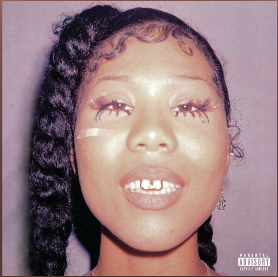
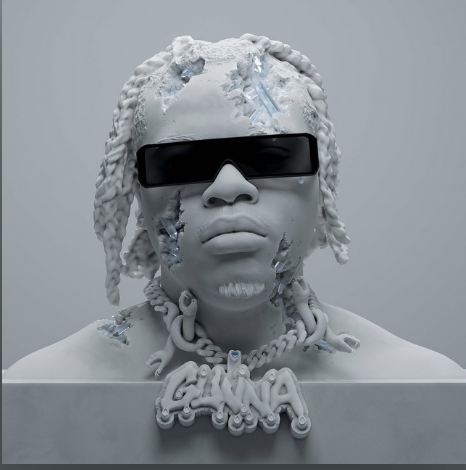

30 моих любимых альбомов в 2022 (часть 3)
10. Sainté - Vacation
Топ-10 лучших альбомов 2022 года открывает единственный в этом топе британец, молодой
Sainté. Опять же история, история, история. Узнал о Сенте в 2021 году, когда тот выпустил свой EP "Local
Mvp". На том альбоме меня поразили супер спокойные, чилловые и в то же время качающие и достойные биты,
которые дополняются интересным вокалом чувака с британским акцентом (boa o woar, обожаю). На том альбоме
было всего 4 трека, но они настолько сильно понравились мне своей простотой и обычным концептом, что я
включал этот альбом при любом возможном случае: когда делал дз, когда ехал куда-то, когда занимался в зале,
этот альбом реально хорош под все: от йоги до тусы. Короче говоря, заслушал до дыр все 4 трека, но они мне
не перестали нравиться. И вот в очередной аз после прослушивания альбома мне выдается какой-то трек
"Compare" (это когда ты дослушал до конца альбом и спотифай ставит тебе треки, которые по вайбу похожи на
этот альбом), который я раньше не слышал. Смотрю на обложку - вижу ту, которая находится чуть выше данного
текста и до меня доходит, что это новый альбом, выпущенный Сентом. Из-за того, что он не супер популярность,
я нигде не увидел новостей о том, что у него выходит альбом. Ну и конечно же начал слушать этот альбом,
который меня зарядил сразу еще с обложки. В ожиданиях было что-то вроде путешествия, которое будет
дополняться разными видами и материальными вещами, которыми классно воспользоваться в отпуске (типа вкусная
еда в роскошном ресторане, поездка на катере и другие ценности). Так и получилось. Альбом пропитан этим
чувством, когда ты идешь по улице и понимаешь, что в данный момент тебе не надо думать о том, как решить
проблему или задачу, как успеть вовремя на пару или еще в какое-то важное место. Это происходит потому что
ты в отпуске и можешь наконец-то насладиться моментом и посмотреть вокруг себя и увидеть различные красоты
мест, в которых оказался. Если включить этот альбом и послушать от начала до конца, буквально создается
впечатление, что ты на 20 минут оказался в другой стране, в другом месте и открыл для себя какую-то часть
воображения, которая позволила представить себя в новом месте, буквально придумать (я ощущал себя где-то на
границе между Италией и Швейцарией). Этот дорогой звук, строчки про дорогое вино и катера буквально
заставляют почувствовать себя с Сентом в этом путешествии. Незаменимый опыт. Кстати, это еще один альбом в
2022 помимо Few Good Things, который находится на 17 месте этого топа, все треки которого добавлены в мою
медиатеку.
Любимые треки: Arrogant, Compare, Soul Mate
9. IDK - W13
Саш, чего? На 9 место ты ставишь альбом, который состоит из двух треков? Все окей? Да.
Все шикарно. Сейчас станет понятнее. Был обычный август, если быть точнее, то его конец, если еще точнее, то
суббота. Я выехал на дачу поесть шашлыков напоследок, подышать свежим воздухом и просто насладиться одним из
последних летних дней. И тут я вижу колокольчик в спотифае, который обычно означает, что кто-то из артистов,
на которого я подписан, выпустил трек. И оказался прав, IDK (не I Don't Know) выпустил сингл, состоящий из
двух треков. Ну я просто решил послушать, может зайдет. На этом моменте я плохо помню, что произошло...
Ощущение было, как будто меня посадили в ракету и я улетел в другую вселенную. Обе песни из этого альбома
настолько сильно проникли мне в душу: этот мелодичный бит, мелодичная читка и приемы на бэках. Буквально к
каждой секунде каждого трека я прислушивался и обалдевал от этого настроения. И если попробовать нарисовать
свои ощущения от первого прослушивания этих песен, получится картина, очень похожая на обложку, что-то
непонятное и красочное, но когда соединяешь все эти хаотичные цвета, получается одна большая картина,
которая просто создана для лета. Хочется сказать: ах как жаль, что эти две песни вышли в последнюю пятницу
лета, а не хотя бы в середине, чтобы можно было потом, в декабре ассоциировать себя с этими песнями.
Послушав первый трек на 4 минуты, я реально ощущал себя в другой вселенной с такими невероятными эмоциями,
которые я испытал при прослушивании первого трека. Но как мы помним, трека в альбоме два. И когда включился
второй трек, я буквально вытащил наушники из ушей и сказал "Все, с меня хватит". Обычно так говорят, когда
слышат что-то очень очень крутое. И этот момент, когда ты находишься на даче, перед тобой огромный лес, в
нос все еще попадает запах шашлыка, и момент осознания, когда ты прослушал просто шедевральный трек, 20
секунд второго трека и понимаешь, что тебя ждут еще столько же обалденные минут. Ты не знаешь, чем ждать от
трека, но твердо понимаешь, что это будет слишком сильно. Так и случилось... Трек Free Slime взорвал мне
голову на 10-й секунде и продолжал разрывать до самого конца. Я влюбился в этот трек за секунду и больше
никогда не разлюблю. Этот трек я готов слушать каждый день до конца своих дней, потому что послушав минуту
этого трека, я получаю огромное количество энергии на весь день. Создалось ощущение, что я слишком много
пишу про этот "альбом". Но по факту Free Slime стал топ-1 треком этого года в моем личном топе и по
статистике моего спотифая. Честно, я бы спокойно мог включить этот альбом в топ-3 этого года, но из-за того,
что это сингл, который был записан за недельки две, а не полноценный альбом, который пишется гораздо дольше,
я поставил его на 9 место.
Любимые треки: Drive, Free Slime
8. SZA - SOS

Ну что-ж, начинается самое интересное. В этом году Сиза дропнула делюкс версию CTRL,
которая открывала вторую десятку моего топа, а также полноценный альбом, который человечество ждало на
протяжении пяти лет. Я полюбил этот альбом даже без прослушивания, я просто увидел обложку. Она просто
невообразимая. В преддверии ожидания, она дропнула сингл Shirt - очень спокойный и вайбовый трек. Желание
послушать альбом увеличилось в несколько раз. Когда он наконец вышел, я в этот же день послушал его целиком.
Интро создает ощущение, что Сиза пытается докричаться до кого-то (возможно, своих слушателей). Меня унесло
со второго трека "Kill Bill", эта мелодичность Сизы, контрастирующая со спокойными битами. К сожалению, этот
альбом вышел в этом месяце, поэтому никаких ностальгических чувств у меня пока что нет. Однако, могу с
уверенностью сказать, что этот альбом уже стал классикой 2022 года. В целом, экспериментируя с жанрами, Сиза
попробовала себя в разных ипостасях, одной из которых стал трек Low с эдлибами Трэвиса на фоне. Сиза
показала, что она может себя уверенно чувствовать на быстром треке и, в целом, в рэпе. Та химия, которую
показали Сиза и Дон Толивер на треке Used меня покорила... Я помню, как я вышел на улицу в холодный
декабрьский день. Светило солнце, и, услышав этот трек впервые после первого прослушивания альбома, я
прочувствовал этот трек на все 100%. То настроение, которое передает этот трек (чистая и добрая радость)
позволяет выбраться из любого состояния и почувствовать блики солнца, даже если оно за густыми облаками.
Open Arms с Трэвисом также произвело невероятное впечатление. Трек Snooze и Love Language позволяют просто
полежать и наслаждаться моментом, а именно звуками, которые поступают в уши. Какого-то целого мнения об
альбоме у меня нету, есть просто очень много маленьких кусочков, складывая которые можно будет потом
получить общее мнение на этот альбом.
Любимые треки: Kill Bill, Low, Used, Open Arms, Shirt
7. Metro Boomin - Heroes & Villains
Впервые о Метро я узнал после его дебютного альбома, на котором он собрал самых "жирных"
представителей рэп-тусовки в Америке, вокал которых были дополнены именно Метро. Тогда его альбом стал одним
из лучших альбомов 2018 года для меня, ожидание сиквела было долгим, но все-таки нашлось в конце 2022 года,
также, как и SOS Сизы, в декабре. Изначально, альбом должен был выйти в начале ноября, но его отложили из-за
очистки сэмплов. Когда я узнал о концепте альбома, я был шокирован от его крутизны и понял, что такой альбом
мог выпустить только битмейкер. Концепт состоит в том, что все реперы являются злодеями, а все РНБ чуваки
являются героями. Это настолько крутой концепт, что тяжелые, злые и грубые рэперы реально звучат как злодеи,
а такие люди как Дон Толивер, Крис Браун звучат как ангелы или герои. Начиная с самого первого трека после
интро, на котором есть Future и Chris Brown можно отследить этот концепт во всей красе. Однако с течением
альбома концепт затеривается в глубинных смыслах строк. Я получил огромное удовольствие от просушивания
альбома, но опять же, эмоций, которые я получил я не смогу передать, так как это было совсем недавно и
должно пройти время, чтобы с радостью вспоминать о счастливых моментах, проведенных с этим альбомом. Тем не
менее, могу сказать, что такие альбомы оставляют ежеминутные классные впечатления: темный (в смысле dark)
Трэвис вернулся на треке Insane, волшебный вокал The Weeknd на треке Creepin'. Меня просто поразило
количество денег и количество артистов на одном альбоме. Все самые большие мастодонты арены собрались на
одном альбоме, чтобы сделать несколько изумительных треков вместе. Этот эпик, который проявляется только в
тексте в виде имен на фитах уже созовет вокруг альбома большую шумиху. Мне начал нравиться новый Трэвис,
который ушел от своих старых эдлибов, которые были крутыми в 2018 году, но не сейчас. Трек Роки с Тейкофом
заставил меня по новому посмотреть на все материальные вещи понять, насколько они посредственны. А, ну и
конечно Gunna, который чувствует каждый сольный бит идеально.
Любимые треки: Too Many Nights, Insane, Creeping', Feel the Fiyaaaah
6. Drake & 21 Savage - Her Loss

Honestly, Nevermind здорового человека. После "изумительного" альбома Дрейка, вышедшего в
начале лета, в конце октября Дриззи объявляет, что скоро выйдет совместный альбом Дрейка и 21. Афигеть.
После Jimmy Cooks на июньском альбоме, я понял, что кажется Дрейк впервые за 4 года дропнет неплохой альбом.
Увидев обложку, мои ожидания умерли. Абсолютно сразу. Более того, после того, как этот альбом вышел, я даже
не слушал его в первый день, пока из каждого чайника не стало доноситься фраза "21, Can you do some for
me???" Я сразу понял, что пришло время послушать. Так как ожидания умерли, я впервые послушал альбом при
занятии в зале, никаких ожиданий не возлагав на этот альбом, однако все изменилось на первом же треке. Меня
унесло куда-то далеко на первых 5-ти треках, пока до меня не дошло, что я в зале и надо делать подход, а не
втыкать в пол, слушая песенки. По-моему, это было мое лучше занятия со времен занятия с тренером, я
настолько много энергии получил от этого альбома, которую я превращал в физическую энергию для работы с
тренажерами. К этой энергии добавлялась радость, что я был прав, и это реально нормальный альбом Дрейка
впервые за 4 года. Почему я говорю Дрейка? потому что это альбом Дрейка, а не совместка. Можно сказать, что
этот альбом - Drake feat. 21 Savage, но никак не "&". Тем не менее, альбом получился очень и очень достойным
для современного Дрейка. Услышав "Hours In Silence", я ничего в этой жизни больше не хотел кроме
прослушивания этого трека, потом я услышал этот трек в машине поздно вечером и это показало мне другие
краски этого трека, которые оказались еще ярче. Если включить этот трек - все станет на свои места.
Обалденная совместка с Трэвисом со сменной бита (а я обожаю смены бита). Послушав альбом 5-6 раз я реально
остался очень доволен работой Дриззи. Этот альбом раскрылся для меня безумно круто, и когда ты не ожидаешь
ничего особенного от альбома, а получаешь безумно крутые эмоции, происходит микроэйфория. Так держать,
Дриззи!!
Любимые треки: Hours In Silence, Pussy & Millions, Middle of The Ocean.
5. Gunna - DS4EVER

Ох Ох Ох. Как же тяжело расставлять альбомы, подходя к самому концу. Ганна - один из моих
самых любимых рэперов. То, насколько в нем связаны мелодичность и читка доводит до мурашек. Чувак делает
волшебные вещи как на быстрое бите, так и на спокойном. После его грандиозного Wunna, я переслушивал по 30
раз трек Wunna Flo и ждал следующего альбома. Дождался. Выходит альбом DS4 и я вообще не понимаю, что это за
говнище. Я послушал 5 раз альбом от и до и для меня все треки были настолько бесчувственными, никудышными и
сухими, прямо как черно-белая обложка. Я очень разочаровался и оставил его до марта. В марте я вернулся к
этому альбому буквально с новыми ушами и начал замечать то, чего не замечал при первых прослушиваниях.
Безусловно, на альбоме все также есть треки, в которых нет ни души, ни мелодичности, а я такие не уважаю.
тем не менее на фоне этих треков очень сильно выделяются треки с необычными битами и просто те треки,
которые я кинул в ту же корзину к бесчувственным. Трек Mop - первый из "чувствительных" треков, которые
все-таки отправились в мой плейлист. Этот бит, эта читка, я снова вспомнил того самого Ганну, по которому
очень скучал. Далее, трек P Power, в котором если убрать стоны - будет очень и очень хорошим претендентом на
трек года. Та химия, которую создали Ганна и Дрейк на этом треке позволяют прочувствовать ту самую
мелодичность и читку, о которой я говорил в самом начале, а трек you & me - это просто явный пример
гениальности Ганны. Какой волшебный сэмпл, бит, какая читка и какая прекрасная женщина на фите. Ох, опять
эти летние деньки вспоминаю под эти треки и становится так тепло внутри. Но трек idk that b*tch меня
покорил. Насколько же бит - отражение настроения всего трека. Это спокойствие и чтение строчек как будто они
звучат в диалоге меня покорило. насколько же это приятно и обалденно звучит.
Любимые треки: Mop, Idk That bitch, You & Me, P Power
4. IDK - Simple
Да да, тот самый на 9-м месте. Этот чувак - лучшее, что происходило со мной за этот год.
После дикого альбома 2021 года, IDK решил сделать "танцевальный альбом" с KAYTRANADA. О боже мой. Насколько
же это мелодичный альбом, который заставляет прочувствовать каждую ниточку и каждый мини звук альбома.
Альбом вышел в одну из лучших дат каждого года - начало мая, когда уже настолько тепло и настолько приятно
на улицах славной России, что я встретил этот альбом в Петербурге. То волшебство, которое творит со мной
Питер не сравнится ни с чем. Изучая и слушая этот альбом впервые на улицах Петербурга, он настолько сильно
дате мне прочувствовать как музыку, так и город. Трек Breath. мне нечего сказать, если его включить после
трека Zaza Tree, это будет настолько волшебный момент проницания и допуска своей души к музыке. Услышав этот
трек, я шел с кофе по утреннему городу северной столицы, послушав первые 30 секунд трека еще до начала слов,
я остановил трек, сел на лавочку и выглядел так, как будто мне позвонили и сказали, что все кошмары 2022
года закончились. Настолько сильно этот трек отпечатался у меня в памяти как пик радости, эйфории, счастья и
других положительных эмоций. После этого, альбом и город заиграли для меня другими красками. Все серые тона
превратились в светло голубые, все черные в темно-коричневые. Все "негативные" цвета этого мира получили
временную амнистию и остался только спектр счастливых эмоций и красок в голове. Альбом, граничащий между поп
и рэпом, позволяют мне понять, что экспериментировать классно и каждый должен искать в себе что-то новое, а
также пробовать что-то новое. Иногда у меня возникает ощущение, что я слушаю этот альбом ради трека Breath.
Совместка с Denzel Curry тоже играет важнейшую роль во влиянии этого альбома на мое майское состояние.
Любимые треки: Dog Food, Breathe, The Code
3. The Weeknd - Dawn FM
Я думаю, что Викенд в представлении не нуждается. Этот альбом был первым альбомом 2022
года, который я послушал. После крайнего альбома Абеля - After Hours - я был в диком ожидании его следующего
альбома. И вот на какой-то премии, полученной за альбом, Викенд говорит: “The After Hours are done and The Dawn is
coming”. После этих слов мое желание услышать следующий альбом повысилось до уровня ежедневного
обновления новостей и узнавании каких-нибудь фактов или сливов, связанных с альбомом. В начале января
наконец-то выходит альбом "Dawn FM". Поняв, что это будет концепция радио, которое играет по типу: музыка,
реклама, музыка, история и т.д. мне понравилась эта концепция и я стал изучать, что же придумал Абель. И
знаете кого он позвал на роль Рекламы и диджея? Джим Керри!!!!!! Боже это было шедеврально слушать его голос
о том, какой следующий трек будет исполнять Викенд. По мне, альбом разделен на две части: первая часть
заканчивается 6-ым треком, а именно той самой историей про детство Квинси. Я называю эту часть танцевальной.
Так как на ней присутствуют такие треки как: Gasoline, Take My Breath, Sacrifice. Не хотеть двигаться или
просто качать головой под эти треки может только глухой человек. Честно, мне очень нравится уход Викенда в
80-е, все эти диско шары, танцпол на роликах и огромное, просто огромное количество наркоты. Все эти
настроения трипов, кайфа и всего остального отражены на этом альбоме, а точнее в этой части. Вторая часть
альбома начинается на шикарном треке Out Of Time. Когда я впервые услышал этот трек, я был обескуражен и
просто шокирован, что в моих ушах Майкл Джексон, а в телефоне написано, что это The Weeknd. На этом треке я
твердо и окончательно понял, что Эйбел - современный Джексон. То, как он берет высокие ноты, да что уж тут
рассказывать, весь трек - это идентичный вокал Джексона. И это не что-то из разряда "вднохновился", а это
реально личный стиль Викенда, который просто схож с Майклом. Какой же волшебный трек. Такое же настроение
имеет следующий трек по названием, "Here We Go Again" с Тайлером. Опять же, очень приятный трек, про темную
сторону любви. Это первый совместный трек Тайлера и Викенда и какую же химию они создают вместе. Эти
завывания Эйбла меня буквально поднимут в небо по лестнице, прямо как на обложке Highest In The Room
Трэвиса. Вторая часть для меня называется "Медляк", так как танцевальная часть прошла и начался этот самый
медляк. Альбом оставил безумные эмоции и заряд на весь день, а эмоции от Sacrifice я даже записал на видео.
Этот альбом позволил подумать о том, что меня ждет просто шикарный год, а эта пластинка лишь первая часть
этой главы под названием "2022".
Любимые треки: Gasoline, Take My Breath, Sacrifice, Out of Time, Here We Go... Again, I
Heard You Married
2. Kendrick Lamar - Mr. Morale & The Big Steppers
Есть подозрения, что этот артист тоже не нуждается в представлении. Первый сольный
альбом Кендрика за 5 лет, если не считать альбом для Марвел 2018 года. Мы не будем уходить далеко в историю,
а начнем прямо с 2022 года. Ладно, с 2021. В 2021 году вышло сообщение от Кендрика фанатам
(https://oklama.com/nuthoughts), в котором он говорил о своей текущей жизни: отказ от телефона, утренние
поездки на велике, про то, что он пишет и слушает, про то, что он пишет последний альбом на лейбле Топ Дога.
В этом письме буквально описано то, как я себе представляю человека, который добился всего, у него нет
внутренней погони за деньгами, материальных ценностей. Он как Фрэнк Оушен, который просто катается на велике
в центре Нью Йорка без охраны, без всего. В мае вышел 5-ый студийный альбом Кендрика с двойным названием, и
как следствие, разделенный на две части. Первая часть содержит в себе 9 треков и называется The Big Steppers
- моральное разложение Культуры, на которой Кендрик размышляет о материальных ценностях, своих проблемах,
критике в свой адрес и как с ней бороться. На треке United In Grief он говорит об отношении к деньгам, на
N95 - про материальные ценности. Вторая часть альбома называется Mr. Morale - ясность Совести. На ней
Кендрик пытается обработать травму и преобразования, полученные за несколько лет жизни. Теперь про эмоции.
Этот альбом стал классикой в день выхода, в этот же день я послушал альбом уже раза три и не мог
остановиться. Первый трек, который меня покорил эмоционально конечно же стал N95, на котором Кендрик так
агрессивно говорит о том, что если снять с человека все его вещи, что от него останется? кем он будет?
Забавно, что этот трек звучал на выступление Кендрика на презентации летней коллекции Louis Vuitton. Второй
трек, покоривший меня, стал Die Hard с волшебным вокалом Blxst, который не смотря на свой текст, дала
огромное количество положительных эмоций на протяжении всей песни. Father Time, следующий за Die Hard, стал
эмоциональным взрывом для меня. На нем Кендрик говорит про проблемы с отцом, которые тянутся с самого его
рождения и вылезают до сих пор. Я считаю, что Sampha идеальном подходит на этом треке своим вокалом. Rich
Spirit имеет похожее настроение, что и Father Time, однако все же отличается и является очень примечательным
для меня треком. We Cry Together - музыкальная ссора Кендрика и его жены, которую слушаешь на протяжении 5 с
половиной минут как будто осмотришь сериал без картинки (хотя клип на этот трек все-таки есть). Этот трек
является настолько "жизненным", что-ли? В жизни реально возникают такие ссоры с такими переходы на личности,
прямые оскорбления, которые продолжаются очень долго, однако все равно сводятся к примирению. Легендарный
трек. Вторая часть альбома начинается с моего любимого трека с этого альбома Count Me Out, клип на который
вышел совет недавно и он очень красивый. На этом треке звучат слова про безостановочную работу, именно
поэтому этот трек нашел такое сильный отзыв у меня внутри, потому что в тот момент процесс перехода на
бюджет подходил к концу и нужно было приложить максимальное количество усилий. Отсюда и вывод, что этот трек
стал любимым - он дал мне огромное количество мотивации. Savior - топ-2 этого альбома, так как он дает
понять, что иногда люди делают из обычных людей апостолов, которые являются их спасителями. Это реально так,
и боготворить людей не надо, так как можно стать очень зависимым от них, что приведет к страдательным
последствиям. По сути, я сейчас сделал обзор на каждый трек, что странно, ведь в этом топе я в основном
говорю об эмоциях, полученных от музыки. Дело в том, что Кендрик - это прежде всего слова, а потом уже
музыка и эмоции от нее. Каждый трек давал мне огромное количество тем, над которыми стоит задуматься. Этот
альбом - преодоление Кендриком своих проблем через музыку и у него это получилось. Альбом находится
буквально вне времени и связать его с временем года, погодой на улице или еще какими-то внешними факторами
просто нельзя, так как я получаю новые эмоции каждый раз при прослушивании этого альбома.
Любимые треки: N95, Rich Spirit, Father Time, Count Me Out, Savior, Mr. Morale
1. Denzel Curry - Melt My Eyez See Your Future
Дензел Карри. Слушая рэп уже несколько лет, мне никогда нравился Дензел Карри, я относил
его ко всем остальным ребятам, которые не вкладывают душу в свою музыку. Я абсолютно не следил за Дензелом,
поэтому даже не слушал никакие синглы перед альбомом. Увидев, что у него вышел альбом, я все-таки решил
послушать и убедиться в том, что ничего не изменилось и он все также мне не нравится Дело в том, что тогда
отключили спотифай в России и я не мог послушать уже никаких новинок с телефона, так как подписка не могла
оплатиться и я искал какие-нибудь новую музыку на компьютере. Однако все изменилось по щелчку пальца.
Услышав первый трек с этого альбома, Melt Session #1, я проверил, точно ли Дензела я слушаю. Я никогда не
слышал такого Дензела, такого мелодичного, такие биты. На протяжении всего топа я топлю за мелодичность,
экспериментальность и просто хорошее и интересное звучание музыки. На этом альбоме я получил все вместе,
совсем не ожидая этого от него. Можно сказать, что это новый звук Дензела. Слушая буквально каждый трек, я
все больше и больше влюблялся в нового Дензела и этот альбом. Worst Comes To Worst - типичный рэп трек,
однако почему-то он звучал настолько мелодично на фоне всего альбома. Буквально все треки из этого альбома
добавлены в мою медиатеку, потому что я один раз их услышал и больше не переставал слышать. Самый кайф
начинается на треке Mental, в котором появляется еще большая мелодичность. Я реально сидел и не понимал, что
случилось с Дензелом, откуда он узнал, какая музыка мне нравится и подстригся под меня. Этот спокойный
апрельский движ, в котором мешается пение птиц, весенние звуки детей, играющих на площадке. Это настроение
продолжается треком Troubles с T-Pain, который своим вокалом вытаскивает из любой эмоциональной задницы.
Ain't No Way, который начинается с 6LACK, просто волшебное настроением которое также продолжает настроение
двух предыдущих треков Потом начинается очень жесткий рэп, но тоже классный. Жесткий рэп производит и на
X-Wing, абсолютный бэнгер этого альбома. Вообще, расстановка треков на этом альбоме просто замечательная.
Angelz является чем-то средним между X-Wing и Mental, то есть жесткая читка и вокал какой-то женщины создают
настроение 50 на 50 этого трека. Альбом заканчивается таким же спокойным треком The Ills, который позволяет
напоследок насладиться тем самым новым звуком Дензела. Такие альбомы идеально слушать где-нибудь на природе,
в окружении друзей и, чтобы прочувствовать момент. Лично я слушал альбом несколько раз на открытом воздухе с
каким-нибудь смузи или просто освежающим напитком и это незабываемо. Почему именно этот альбом являются
перым местом в этом топе? Потому что настолько сильная трансформация артиста между двумя крайними альбомами
и настолько близкая мне тема искать что-то новое в своем стиле меня покорила. Дензел буквально сделал этот
год.
Любимые треки: Walkin, Mental, Troubles, X-Wing, The Ills, Ain't No Way
Спасибо, что дочитали этот топ, до новых встреч!
@kolenkoa